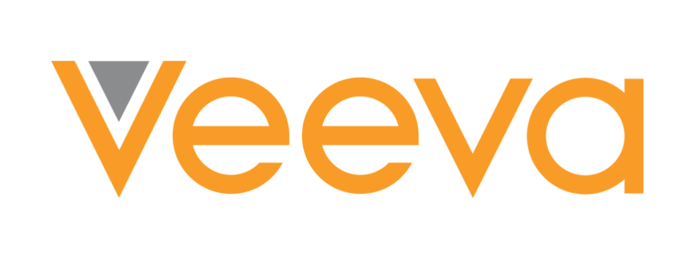

HackOHI/O is a 24-hour hackathon that attracts over 800 participants annually for a
full weekend of coding, learning, networking, and innovation. HackOHI/O gives students a unique,
experiential-learning opportunity to build technology projects from scratch in a welcoming, supporting environment.
Teams can come with an idea themselves or can take inspiration from challenges presented by our supporting companies and organizations.
After the 24-hour "hacking" session is over, teams present their projects to industry experts and judges to get feedback and compete for prizes.
HackOHI/O hosted by OHI/O, a student organization at The Ohio State University. OHI/O is dedicated to fostering tech culture at Ohio State
and its surrounding communities in Central Ohio.
In 2022, HackOHI/O will be celebrating it's 10th year Anniversary! OHI/O is proud of the
legacy Hack has created at Ohio State and hopes to make this years Hack the best yet. This year, Hack will feature additional hype events,
more event festivities, and bigger prizes. We hope to see you there!
Sponsors
